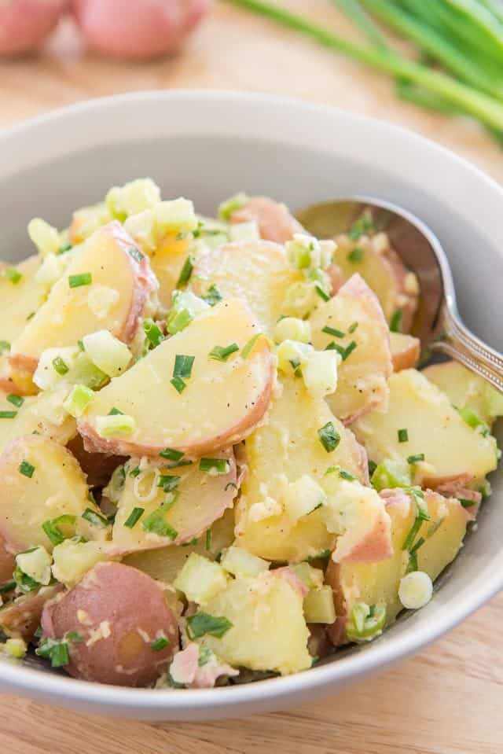

Red Potato Salad

Description
Maybe you are craving for something else less meaty. We've got you covered with our
Red Potato recipe.
This Red Potato Salad recipe is the perfect potluck side, or
lunch side for work or a picnic. It’s an easy recipe to make
and has lots of fresh flavor and texture.
Ingredients
- Mayonnaise
- Extra virgin olive oil
- Dijon mustard
- Red or white wine vinegar
- Kosher salt
- Black pepper
- Potatos
Step-by-step
- Combine mayonnaise, extra virgin olive oil, Dijon mustard, red or white wine vinegar, kosher salt, and black pepper in a large bowl:
- Mix the Ingredients until they are creamy and smooth
- Slice (or chunk) some red skin potatoes and put them in a large pot.
- Cover the potatoes with cold water
- Add a couple of tablespoons of salt to the water
- Boil for 5 minutes
- Drain potatoes
- Add dressings
- Enjoy
Other Recipes